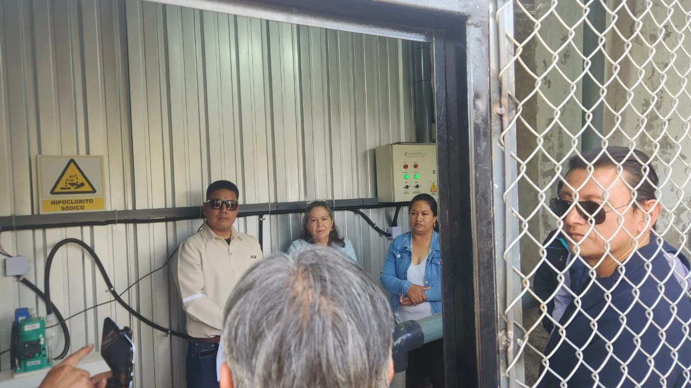
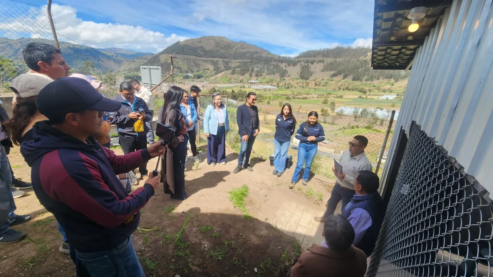

Proyectos de ingeniería con estudiantes y comunidades
El trabajo con comunidades me ha permitido relacionar la formación en ingeniería con necesidades técnicas reales, especialmente mediante proyectos de tecnología humanitaria de IEEE y actividades de vinculación de la ESPOCH.

ESPOCH-ONE
Project Lead. ESPOCH-ONE trabaja en la cloración automática del sistema rural de agua potable de Licto, Chimborazo. IEEE Tech4Good adjudicó al proyecto un financiamiento de USD 9.998.
El trabajo ha incluido inspecciones técnicas, análisis de calidad del agua, mediciones de resistividad del terreno, diseño de puesta a tierra, extensión del servicio eléctrico, gestión de medidores, instalaciones eléctricas, coordinación de adecuaciones civiles e hidráulicas, integración del sistema de dosificación y preparación para la puesta en marcha.

Transformando comunidades vulnerables de la región andina del Ecuador
Participé como coordinador profesional del componente IEEE SIGHT desarrollado en Angamarca. El proyecto integró un molino comunitario de granos, una iniciativa de secado automatizado y actividades STEM para niños y adolescentes.